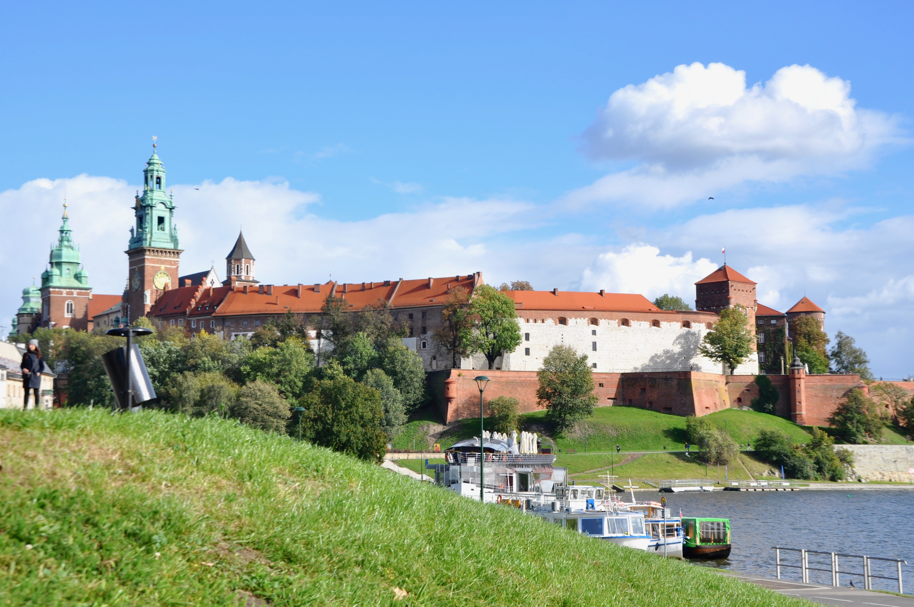
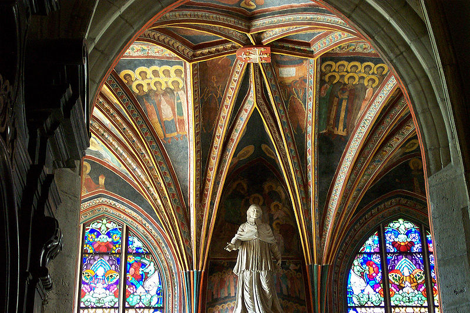

Wawel Castle is located in Krakow. Wawel is on a 228 meter high hill overlooking the Wisla River in South of the Old City. The Wawel Royal Castle symbolizes the golden age of Poland, or rather the Polish-Lithuanian kingdom - then one of the largest in Europe. The castle was built in the 14th century as a royal residence, under the orders of King Casimir III. Later, in the reign of Ladislas II Jagellon and Hedwige, it was increased in size.
Wawel Cathedral contains in its mausoleum kings and queens, generals, artists and even a president of the Republic: One of the Kaczynski twins. The castle hosts a museum on its history.
